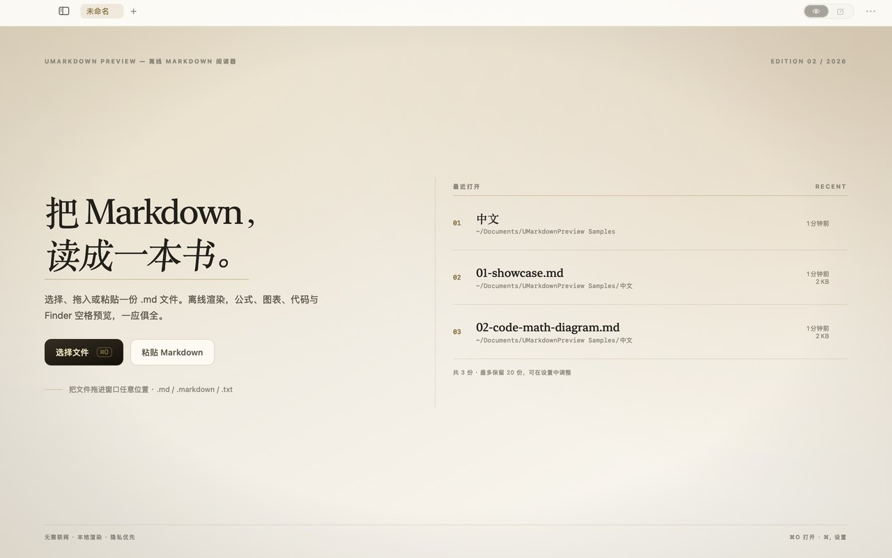
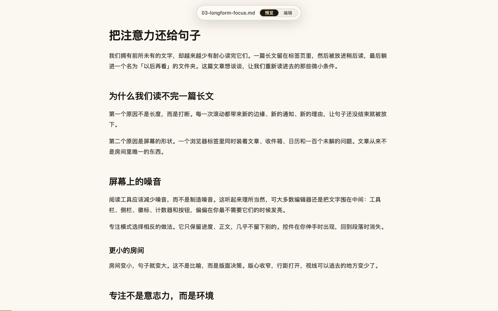
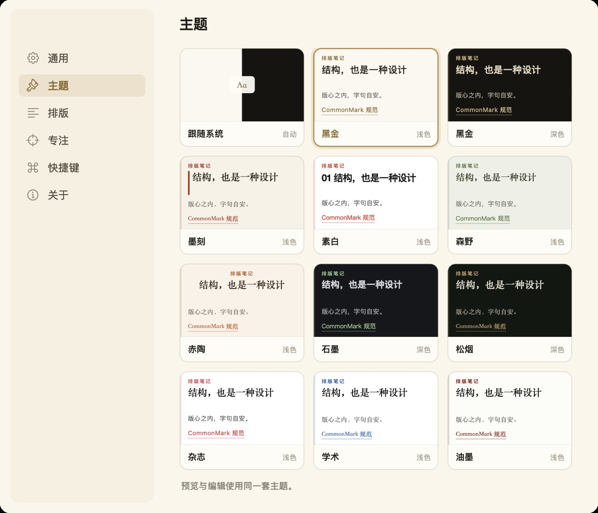
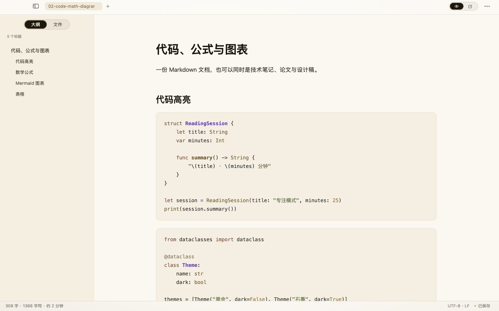
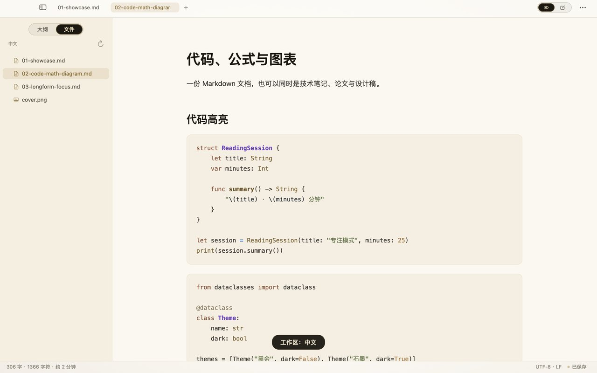

离线 Markdown 阅读器 · macOS
把 Markdown，读成一本书。
安静、原生的 macOS Markdown 阅读器与专注写作工具。黑金界面、十二套主题、文件夹工作区、公式与图表，以及一个不打扰你的阅读空间。

01UMarkdownPreview
01 — 阅读
更安静的阅读空间。
窗口退后，留下正文、清晰的目录，以及一条告诉你读到哪里的金色细线。
- 01
专注模式
按 ⌘⇧F，窗口收起多余的边框，只留下段落。顶部是阅读进度胶囊，控件只在你伸手时出现。
- 02
十二套主题选项
跟随系统，或选择黑金浅色/深色、宋版朱印、瑞士白、鼠尾草、陶土、石墨、松烟、杂志、学术、墨。
- 03
原生排版
暖纸色、可配置目录，Retina 与 1× 屏幕上的文字都保持清晰。

主题
同一篇文档，十二种看法。
预览与编辑共用同一套主题。改一次，整个阅读空间跟着改变。
跟随系统黑金浅色黑金深色宋版朱印瑞士白鼠尾草陶土石墨松烟杂志学术墨

02 — 写作
把注意力留在句子里。
编辑不该像操作一台机器。编辑器退到一旁：打字机模式、自动保存，以及与预览一致的语法高亮。
- 01
打字机模式
光标停在屏幕中央附近，长文档也不会把眼睛拉到底部。
- 02
自动保存
停笔一秒，文件悄悄写入磁盘。
- 03
编辑态语法高亮
围栏代码块在编辑器中同样高亮，包括引用与嵌套列表中的代码。

03 — 工作区
终于像一个工作区。
打开一个文件夹，而不只是一个文件。侧栏按层加载，标签页把多个文档留在手边，命令面板几次击键就能找到任何东西。
- 01
文件夹工作区
按层加载的文件树、行内重命名、在访达中显示、在此处打开终端。
- 02
标签页与会话恢复
退出再打开，窗口与标签回到原来的位置。
- 03
快速打开
按 ⌘⇧P 唤出磨砂命令面板，模糊匹配文件与命令。

0账号
0分析
100%本地渲染